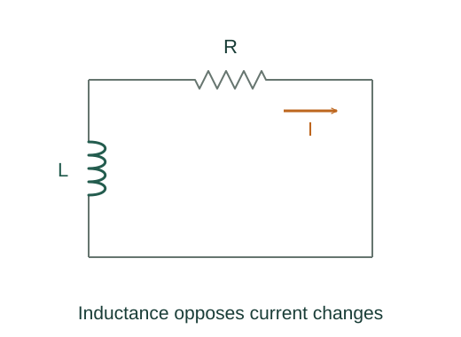

Derive RL transients, mutual emf and magnetic energy density
A constant source satisfies LdI/dt + RI = ℰ. Its steady solution is ℰ/R and its homogeneous solution decays at rate R/L.
What the symbols mean
L: constant self-inductance; M: mutual inductance; n: solenoid turns per length; A: solenoid cross section.
When this applies
Linear inductors, fixed coil geometry, vacuum solenoid well away from ends, and lumped resistor–inductor circuit.
Developing the argument

Write and solve the RL loop
A constant source satisfies LdI/dt + RI = ℰ. Its steady solution is ℰ/R and its homogeneous solution decays at rate R/L.
Remove the source
With ℰ = 0 the same homogeneous solution gives current decay. Initial current sets its amplitude.
Find a solenoid’s inductance
Its field is μ₀nI, each turn links BA, and total turns are nℓ. Divide total flux linkage by current.
Divide stored energy by field volume
Insert the solenoid inductance in U = LI²/2 and divide by Aℓ. Replace μ₀nI by B.
Differentiate mutual linkage
Define N₂Φ₂from₁ = MI₁. Faraday’s law differentiates it to the emf in coil 2; reciprocity gives the analogous coil-1 relation for a reciprocal linear medium.
A worked example
A 0.2 H inductor with R = 10 Ω has current-decay time constant 0.020 s.
Derivation behind this calculation ↗A point to keep straight
The magnetic energy-density formula shown is the vacuum linear case; nonlinear magnetic media need a more general energy integral.
Check the assumptions and derivation ↗